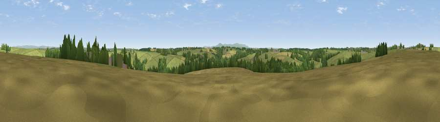

Viewpoint near Ashreigney
#23998 in England · top 47% of its area beats it · near AshreigneyWhere it is
The exact computed spot (SS 63675 12525). Click the marker for map links.
The view, rendered

A 360° render of this exact spot computed from the terrain model, tree cover and land cover — summer colours, afternoon light, calibrated against photographs of famous viewpoints. Real trees, hedges and buildings will differ in detail.
The panorama
Grey silhouette: terrain skyline in each direction (720 bearings, Earth curvature and refraction included). Dashed green: skyline with trees (+15 m) and buildings (+8 m) as obstacles. Blue strip: how far the ground is visible on each bearing.
Where the view opens
Wedge length = distance to the farthest visible ground on that bearing (vegetation-aware). Rings at 10, 25 and 50 km.
What fills the view
69% grassland · 17% cropland · 14% woodland ·
Angular shares of the visible panorama (visual magnitude), not map area. Landscape diversity 0.37 (0–1 Shannon).
Key numbers
More beautiful places nearby
The staircase of upgrades: each row has a higher view potential than everything closer. Driving times are estimates from straight-line distance, calibrated against real road routing — check an actual route before setting out.
| Place | Direction | Drive | Score |
|---|---|---|---|
| Viewpoint near Ashreigney | NNE · 1 km | ~4 min | 53.8 |
| Viewpoint near Hollocombe | E · 2 km | ~5 min | 55.3 |
| Cadford Moors | SSE · 5 km | ~10 min | 63.9 |
| Viewpoint near Burrington | N · 6 km | ~12 min | 66.4 |
| Viewpoint near High Bullen | NW · 14 km | ~26 min | 71.2 |
| Viewpoint near Landkey | NNW · 17 km | ~30 min | 74.0 |
| Codden Hill | NNW · 18 km | ~31 min | 81.3 |
| Viewpoint near Parkham | WNW · 27 km | ~44 min | 81.7 |
50.89607, -3.93985 · source: screening · position refined by local search. Computed location — check access rights before visiting.